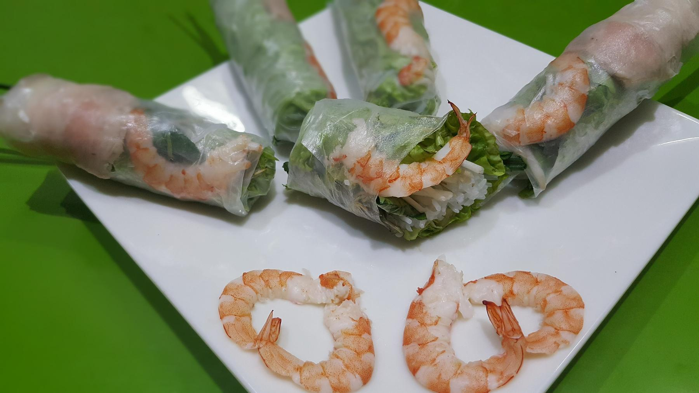

Zurück zur Übersicht
Sommerrollen mit Zitronengras-Hähnchen
Frische Reispapierrollen mit gegrilltem Zitronengras-Hähnchen, Reisnudeln, Kräutern und knackigem Gemüse, dazu Erdnusssoße oder Nuoc Cham.
- Zeit
- 1 Std. 15 Min.
- Schwierigkeit
- mittel
- Kategorie
- Asiatisch
- Ernährung
- fleisch
Zutaten
Portionen
Für das Hähnchen
- 1Stange Zitronengras
- 1Schalotte
- 2Knoblauchzehen
- 2 ELFischsoße
- 2 ELhelle Sojasoße
- 1 ELbrauner Zucker
- 2Hähnchenbrustfilets
- Öl für die Grillpfanne
Für die Rollen
- 100 gReis-Vermicelli (dünne Reisnudeln)
- 8Blätter Reispapier
- 1Möhre
- ½Gurke
- 1Kopfsalat
- 2Frühlingszwiebeln
- Vietnamesischer Koriander (Rau Ram), Minze und Koriander
Zum Servieren
- Erdnusssoße oder Nuoc Cham
Zubereitung
- Zitronengras, Schalotte und Knoblauch fein reiben und in einer großen Schüssel mit Fischsoße, Sojasoße und Zucker verrühren.
- Hähnchen in dünne Scheiben schneiden, unter die Marinade mischen und abgedeckt mindestens 30 Minuten im Kühlschrank ziehen lassen.
- Reisnudeln in kochendem Wasser etwa 1 Minute garen, bis sie weich sind. Abgießen, kalt abschrecken und gut abtropfen lassen.
- Möhre und Gurke in feine Stifte schneiden, Frühlingszwiebeln in Ringe schneiden, Salatblätter und Kräuter waschen und trocken schütteln.
- Eine Grillpfanne mit etwas Öl bei mittlerer bis starker Hitze erhitzen. Das Hähnchen 5–6 Minuten braten und dabei wenden, bis es gut gebräunt und durchgegart ist. Abkühlen lassen.
- Ein Reispapierblatt in eine flache Schüssel mit kaltem Wasser tauchen, bis es rundum nass ist, und mit der glatten Seite nach unten auf die Arbeitsfläche legen.
- Zum oberen Rand hin Vietnamesischen Koriander, Möhre, Gurke, etwas Salat, Frühlingszwiebeln, Hähnchen und Reisnudeln schichten.
- Den oberen Rand über die Füllung klappen, die Seiten einschlagen und fest aufrollen. Mit den übrigen Zutaten genauso verfahren.
- Sofort mit den Dips servieren oder in einer luftdichten Dose im Kühlschrank aufbewahren.
Tipp: Ergibt 8 Rollen. Ohne Grillpfanne gelingt das Hähnchen auch in einer normalen Pfanne. Mengen für Gemüse und Kräuter gibt das Original nicht an, sie sind geschätzt.
Quelle: nach einem Rezept von Andy Cooks.